Autotrader lets you manage algo instances individually or in groups. You can:
Autotrader lets you pause and stop running algos.
Note: You can also pause and stop algos using the inline action buttons.
To pause algos:
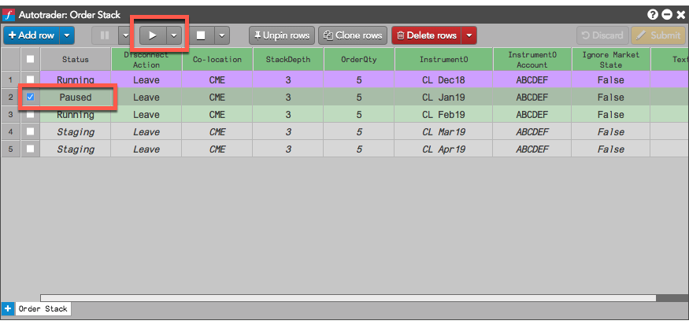
You can also select Pause All from the Pause drop-down to pause all running algos. You can also show a Pause All control button by customizing the control button visibiity from the context menu.
To stop algos:
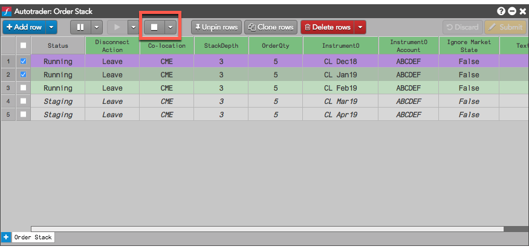
The selected algos are stopped and their statuses are reset to Staging.
You can also select Stop All from the Stop drop-down to stop all running algos. If you stop an unpinned algo, the algo instance is also deleted.
To pause or stop algos using the inline action buttons:
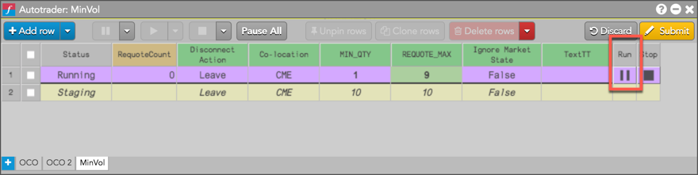
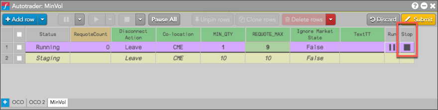
Autotrader lets you pin rows to the widget so they remain in the view after the algos complete.
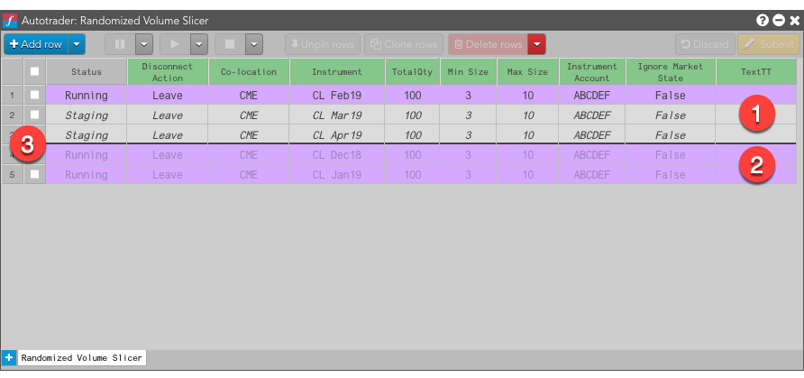
The following is displayed when pinning and unpinning rows:
Note the following effects of pinning and unpinning rows:
To unpin a row, select the pinned algo instance row or rows you want to unpin and click Unpin rows.
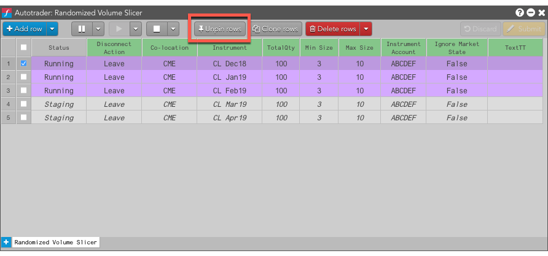
The unpinned rows move below the dividing line.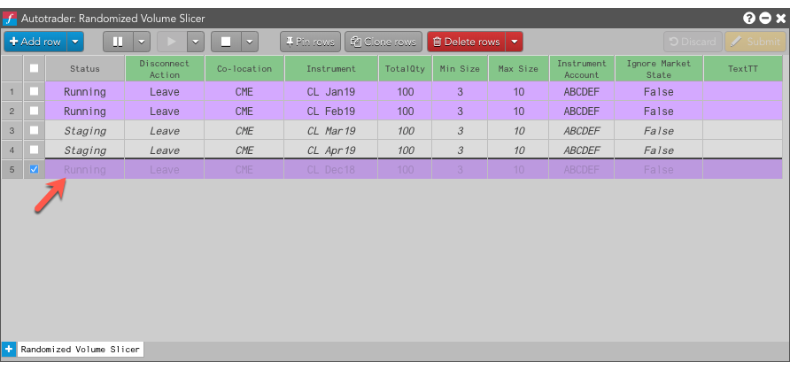
To pin a row, select the unpinned algo instance row or rows you want to pin and click Pin rows.
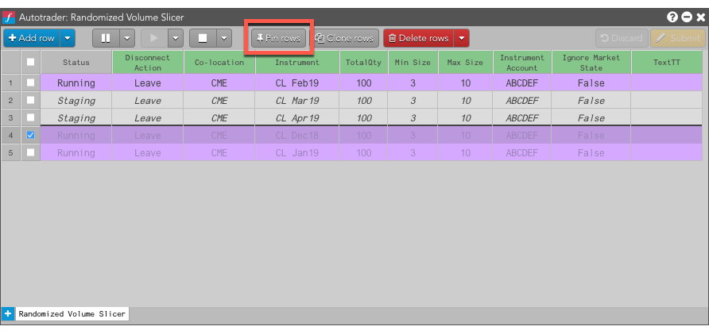
The unpinned rows move below the dividing line.
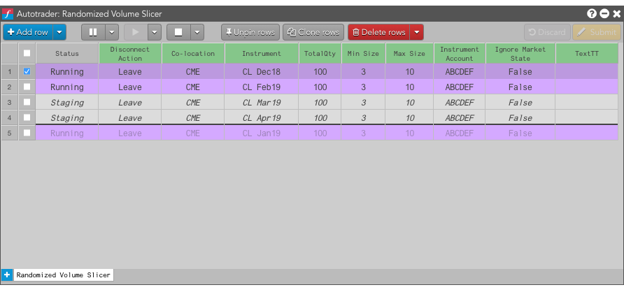
If you have algos running that are not shown in one of the Autotrader tabs, such as Order Ticket Algos (OTAs) or Order Management Algos (OMAs), you can automatically open the related algos in new tabs. In this way, you can use Autotrader to manage those algos in addition to the algos launched from Autotrader.
To open running algos in new tabs, right-click anywhere in the widget and select Auto-create tabs for all running algos from the context menu.
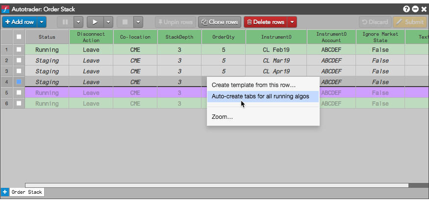
If another algo was running, such as Randomized Volume Slicer, a new tab for that algo would be added.
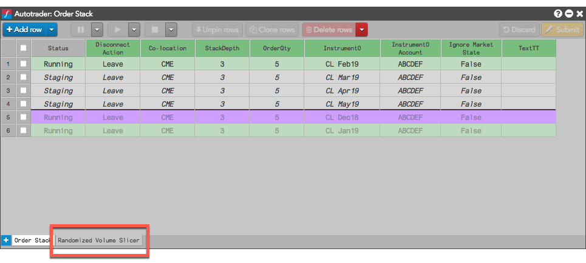
Note: Once a tab is created in Autotrader for algo, any future instances of the algo will be added to the tab, even if they are started outside of Autotrader.
To hide and display control buttons:
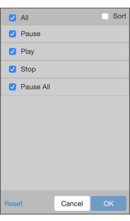